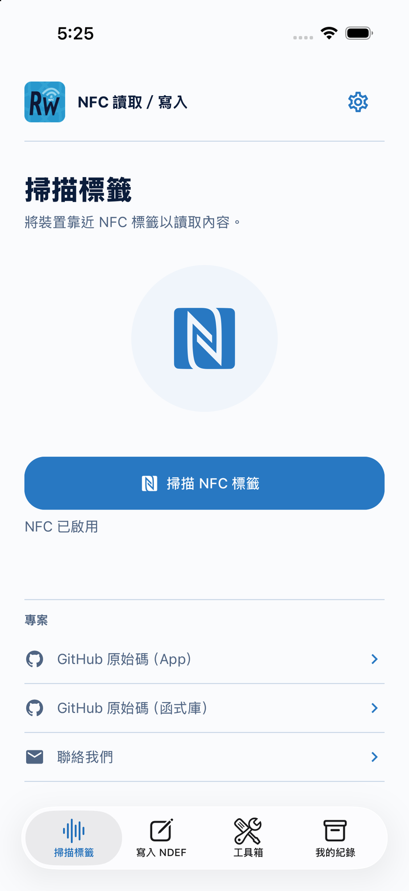
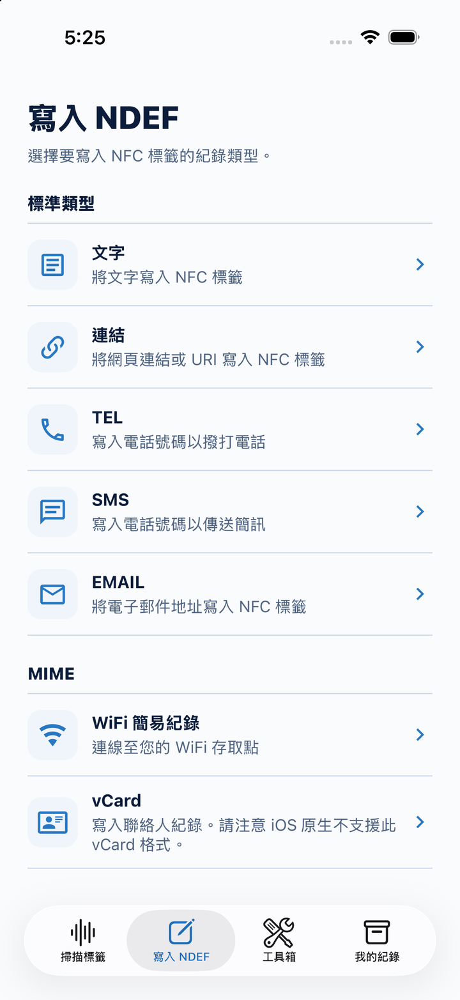
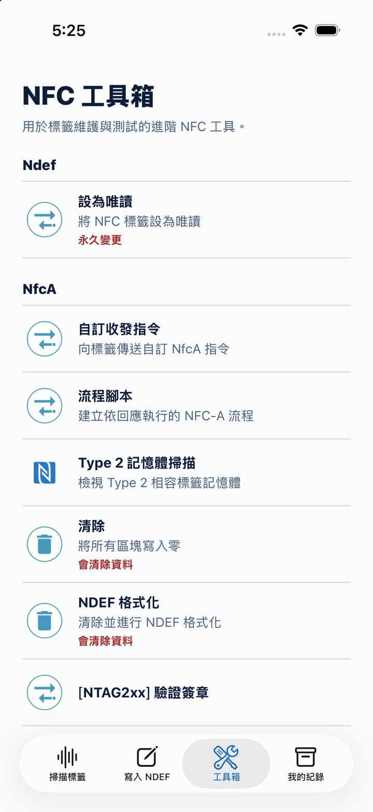
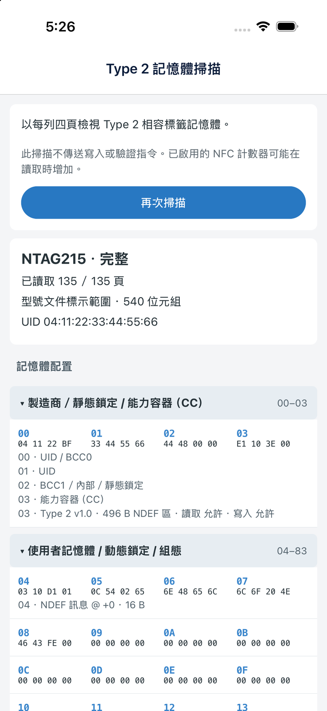

讀取、寫入，
還能重複使用。
檢視標籤識別資訊、通訊技術與 NDEF 資料。寫入文字、連結、電話與電子郵件捷徑、Wi-Fi 紀錄及 vCard，並儲存紀錄，方便日後開啟、複製與分享。
紀錄的開啟方式取決於接收裝置。iOS 原生不支援開啟 NFC vCard 紀錄。
開源工具，親手探索。
為好奇的探索者，以及打造下一個產品的開發者而設計的 NFC 工作台。
讀寫 NFC 標籤、檢視記憶體，讓標籤回應決定下一條指令。
此處展示目前開發版本，商店版本可能有所不同。


讓你的標籤，多一點可能。01 / 支援平台 iOS & Android
02 / 開發框架 React Native
03 / 授權條款 MIT 開源授權
04 / APP 語言 English · 繁體中文 · 日本語
從第一次感應，到下一個原型。
先從日常讀寫開始，當專案有進階需求時，再往下探索。
檢視標籤識別資訊、通訊技術與 NDEF 資料。寫入文字、連結、電話與電子郵件捷徑、Wi-Fi 紀錄及 vCard，並儲存紀錄，方便日後開啟、複製與分享。
紀錄的開啟方式取決於接收裝置。iOS 原生不支援開啟 NFC vCard 紀錄。
建立 NFC-A 或 ISO-DEP 指令流程，使用回應擷取、變數、條件、延遲與有限重複。在執行紀錄中檢視每條指令、回應與分支判斷。
進一步看看以原始 bytes 與註解檢視可讀取的 Type 2 記憶體頁面。支援 NTAG213、NTAG215、NTAG216 的型號配置，以及其他相容標籤的有界資料區掃描。
掃描結果取決於標籤與存取條件。通用掃描不代表完整的實體記憶體傾印。
隨身攜帶的 NFC 工作台
一條指令的回應，就能決定接下來的操作。擷取部分回應、用於後續指令，或依數值選擇不同分支。
透過 NFC-A 或 ISO-DEP 與標籤通訊。
將回應 bytes 擷取為變數，再選擇下一步。
查看指令、回應與分支判斷。
看看 APP 裡面
六個開發版畫面。
點選任一截圖，即可放大查看。
讀取標籤資訊與 NDEF 紀錄。
選擇符合用途的紀錄格式。

開啟指令、流程與記憶體工具。
建立依標籤回應執行的 NFC 流程。
查看送出的指令與收到的回應。

對照頁面資料與解讀資訊。
截圖以所選語言顯示 app 介面，使用 iOS 模擬器中的標籤示範資料。此為開發版畫面展示，不代表新增的硬體測試結果；商店版本可能有所不同。
開源，自由延伸
這個工作台也是開發的起點。閱讀 React Native 原始碼、調整成自己的工作流程，或用來探索既有 app 的 NFC 整合。
採 MIT 開源授權。NFC 核心函式庫： react-native-nfc-manager。
探索原始碼有想實現的專案嗎？
歡迎與我們討論 NFC 原型、React Native 整合或客製行動 app 開發。
聯絡信箱 nfctogo@gmail.com，請告訴我們目標平台、標籤或硬體，以及想實現的功能。
需要具備 NFC 功能的 iPhone 或 Android 裝置，以及相容的標籤。可用技術與操作會依裝置、作業系統及標籤而有所不同。
辨識為 NTAG213、NTAG215、NTAG216 的標籤，會依型號範圍讀取頁面；其他相容 Type 2 標籤，則限定於能力容器（CC）宣告的資料區。不可讀頁面會保留不可用狀態，不會因掃描未完成就推論失敗原因。掃描只送出辨識與讀取指令，但標籤本身的讀取計數器仍可能增加。
此頁展示目前原始碼與開發版本。截圖及流程腳本、Type 2 記憶體掃描、三語介面等新功能，可能與商店現有版本不同。請查看商店版本說明，或從原始碼建置對應版本。